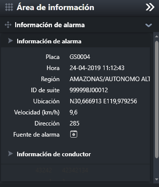
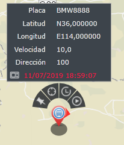

Ver información de la alarma
Puede ver información de la alarmar
Vea la información relacionada con la alarma del vehículo en el área de información.
Seleccione la alarma en la lista de alarmas en la interfaz principal de la alarma del vehículo, y el sistema muestra la información
de la alarma del vehículo que se verá en la ventana del área de información.
En el área de información de la alarma se muestra información relacionada con la alarma, que incluye: número de matrícula,
hora de la alarma, división administrativa, código del kit de seguridad, ubicación de la alarma, velocidad, dirección, fuente
de la alarma, información del conductor, etc.

Fig 39 Ventana de información de alarma
Vea la información más reciente del vehículo en el mapa GIS, incluida información como la posición más cercana y la velocidad
del vehículo de alarma.
| 1. | Seleccione el vehículo de alarma en la interfaz principal de alarma de vehículo, y el sistema muestra la ubicación del vehículo seleccionado en el centro del mapa GIS. |
| 2. | El mouse se desliza sobre el ícono del vehículo en el mapa GIS, y el botón de operación del vehículo se muestra automáticamente arriba el ícono, y la información detallada del vehículo se muestra de manera burbujeante. |
| 3. | Haga clic en el ícono 〖 En la ventana de detalles de vehículo se muestra las informaciones detalladas que incluyen: número de matrícula, longitud,
latitud, velocidad, dirección, tiempo de posicionamiento, etc.

Fig 40 Información reciente del vehículo de alarma |